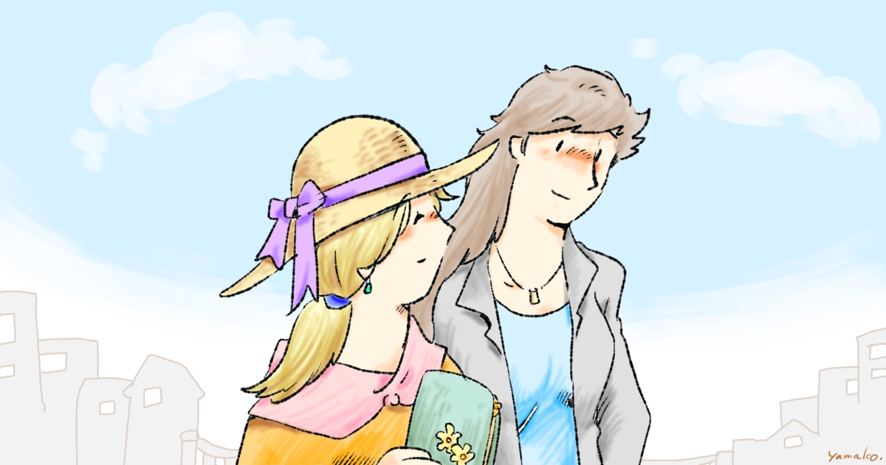

News
- 2021.04.05. 個人ページをつくりました。
Profile
やまこ と申します。よろしくお願いします。
創作百合まんがや、かわいいイラストを描いています。猫とコーヒーが好きです。
Portfolio
- pixiv 12219198
- pixiv Sketch @yamako_love_cat
- 小説 クリスマスと修羅の記憶
Products
- 同人誌 (サークル名・やまこ屋)
- BOOTH やまこ屋
- bookwalker なかよし おねえさんたち シリーズ
- Kindle なかよし おねえさんたち シリーズ 1, 2, 3
- LINEスタンプ なかよし おねえさんたち
Comission
- pixivリクエスト 12219198
- Skeb @yamako_love_cat
Donate
- pixiv FANBOX yamako-love-cat.fanbox.cc
- ほしいものリスト やまこ干し芋
- 投げ銭 (Buy Me Coffee) yamako
- Giftee yamako_love_cat
SNS
- Mastodon (分散SNS) @yamako@fedibird.com
- Twitter @yamako_love_cat
- 質問箱 yamako_love_cat
Contact
ご連絡はメール (ywindish at hey.com) または Mastodon/Twitter の DM にてお願いいたします。